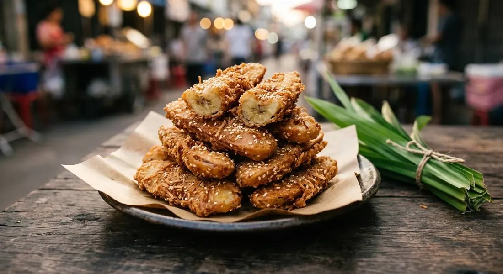

Nam wah bananas sliced lengthwise, a rice-flour batter with coconut and sesame, a spoon of lime water for the crunch — and pandan leaves frying in the oil. The street vendor's art, by the bag.

The name is the history: กล้วยแขก means "guest bananas" — แขก being the old Thai word for Indian and Muslim visitors. The fritters arrived with those communities' street vendors, and they never left. Every Thai market still has a stall frying them in a wide pan of oil with pandan leaves floating in it, turning the whole street fragrant.
The banana matters more than the batter. Thai cooks use กล้วยน้ำว้า — the nam wah banana, short and firm and barely ripe, "ห่าม" — just past green. Slice a ripe Cavendish lengthwise and it collapses into mush in the oil; the nam wah holds its shape and stays starchy-sweet inside the crisp shell. This is not a banana you can casually swap.
And the shell has one quiet trick: น้ำปูนใส — clear lime water. A spoonful of the clear liquid from settled edible lime paste raises the batter's pH and keeps the crust crisp long after it leaves the oil. Both Thai sources below use it. It's the difference between a crack and a chew.
| Thai | English | Amount |
|---|---|---|
| กล้วยน้ำว้าสุกห่าม | Nam wah bananas, just-ripe | 1 comb |
| แป้งข้าวเจ้า | Rice flour | 250 g |
| แป้งข้าวโพด | Corn flour | 25 g |
| น้ำตาลทราย | Sugar | 100 g |
| เกลือป่น | Salt — the source's amount; halve it if you prefer | 1 tbsp |
| ผงฟู | Baking powder | 1½ tbsp |
| มะพร้าวขูด | Shredded coconut | 200 g |
| งาขาว (ไม่คั่ว) | White sesame, untoasted | 50 g |
| นมข้นจืด | Evaporated milk — or 140 g head coconut milk | 250 g |
| น้ำปูนใส | Clear lime water | 70 ml |
| ใบเตย | Pandan leaves | 1 cup |
| น้ำมันปาล์ม | Palm oil, for deep-frying | as needed |
The flour. Rice flour plus a little corn flour (Wongnai) against the shop shortcut of ready-made crispy fry flour (aroifin). The ready flour works; the two-flour mix is the recipe you can read.
The liquid. Evaporated milk (Wongnai) against head coconut milk (aroifin). The milk version is the street standard; the coconut version is richer and slightly softer-shelled.
Salt. A full tablespoon (Wongnai's salty-sweet street profile) against a quarter teaspoon (aroifin). We've transcribed the source amount and flagged it — start at half if you're not sure.
Lime water. Both sources use it, in different amounts. It is not optional for the texture; only the dose is argued.
Banana ripeness. Everyone says ห่าม — just-ripe. A fully ripe banana fritter is a different, softer thing.
This recipe is translated from the following Thai-language sources. Where they disagree, we've said so.
1. Wongnai — "วิธีทำ กล้วยแขก สูตรแป้งกรอบ ทำกินก็ง่าย จะทำขายก็เฮง!" (the rice-flour batter with evaporated milk, coconut and sesame) — wongnai.com
2. aroifin — "วิธีทำ กล้วยทอด สูตรกล้วยทอด กล้วยแขก ทำเองได้ ทำขายกำไรดี" (2 May 2025 — the coconut-milk batter and the pandan-in-the-oil technique) — aroifin.com